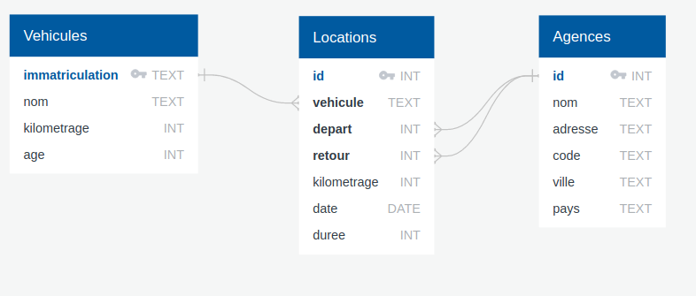
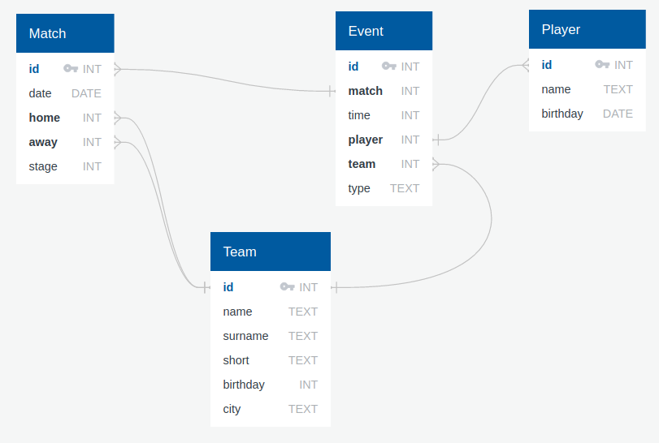

Exercices SQL interactifs⚓︎
sur des bases de données réelles
Exercice 1
Questions interactives à réaliser sur le site sqlzoo.net.
Q1. Travail sur SELECT, (base de données Nobel)  ici.
ici.
Correction
Corrections extraites du dépôt https://github.com/jisaw/sqlzoo-solutions.
/*
Third section of sqlzoo, SELECT from Nobel
*/
--#1
/*
Change the query shown so that it displays Nobel prizes for 1950.
*/
SELECT yr, subject, winner
FROM nobel
WHERE yr = 1950
--#2
/*
Show who won the 1962 prize for Literature.
*/
SELECT winner
FROM nobel
WHERE yr = 1962 AND subject = 'Literature'
--#3
/*
Show the year and subject that won 'Albert Einstein' his prize.
*/
SELECT yr, subject
FROM nobel
WHERE winner = 'Albert Einstein'
--#4
/*
Give the name of the 'Peace' winners since the year 2000, including 2000.
*/
SELECT winner
FROM nobel
WHERE subject = 'Peace' AND yr >= 2000
--#5
/*
Show all details (yr, subject, winner) of the Literature prize winners for 1980 to 1989 inclusive
*/
SELECT yr, subject, winner
FROM nobel
WHERE (yr >=1980 AND yr <=1989) AND subject = 'Literature'
--#6
/*
Show all details of the presidential winners:
Theodore Roosevelt
Woodrow Wilson
Jimmy Carter
*/
SELECT *
FROM nobel
WHERE winner IN ('Theodore Roosevelt', 'Woodrow Wilson', 'Jimmy Carter')
--#7
/*
Show the winners with first name John
*/
SELECT winner
FROM nobel
WHERE winner LIKE 'john%'
--#8
/*
Show the Physics winners for 1980 together with the Chemistry winners for 1984.
*/
SELECT *
FROM nobel
WHERE (subject = "Physics" AND yr = '1980') OR (subject = 'Chemistry' AND yr = 1984)
--#9
/*
Show the winners for 1980 excluding the Chemistry and Medicine
*/
SELECT *
FROM nobel
WHERE yr = 1980 AND subject NOT IN ('Chemistry', 'Medicine')
--#10
/*
Show who won a 'Medicine' prize in an early year (before 1910, not including 1910) together with winners of a 'Literature' prize in a later year (after 2004, including 2004)
*/
SELECT *
FROM nobel
WHERE (subject = 'Medicine' AND yr < 1910) OR (subject = 'Literature' AND yr >= 2004)
--#11
/*
Find all details of the prize won by PETER GRÜNBERG
*/
SELECT *
FROM nobel
WHERE winner LIKE 'peter gr%nberg'
--#12
/*
Find all details of the prize won by EUGENE O'NEILL
*/
SELECT *
FROM nobel
WHERE winner = 'Eugene O''Neill'
--#13
/*
Knights in order
List the winners, year and subject where the winner starts with Sir. Show the the most recent first, then by name order.
*/
SELECT winner, yr, subject
FROM nobel
WHERE winner LIKE 'sir%'
ORDER BY yr DESC, winner
--#14
/*
The expression subject IN ('Chemistry','Physics') can be used as a value - it will be 0 or 1.
Show the 1984 winners ordered by subject and winner name; but list Chemistry and Physics last.
*/
SELECT winner, subject, subject IN ('Physics','Chemistry')
FROM nobel
WHERE yr=1984
ORDER BY subject IN ('Physics','Chemistry'),subject,winner
Q2. Travail sur SUM et COUNT, (base de données World) ici. (jusqu'à la question 5.)
Correction
Corrections extraites du dépôt https://github.com/jisaw/sqlzoo-solutions.
/*
Fifth section of sqlzoo, SUM and COUNT
*/
--#1
/*
Show the total population of the world.
*/
SELECT SUM(population)
FROM world
--#2
/*
List all the continents - just once each.
*/
SELECT DISTINCT(continent)
FROM world
--#3
/*
Give the total GDP of Africa
*/
SELECT SUM(gdp)
FROM world
WHERE continent = 'Africa'
--#4
/*
How many countries have an area of at least 1000000
*/
SELECT COUNT(name)
FROM world
WHERE area >= 1000000
--#5
/*
What is the total population of ('France','Germany','Spain')
*/
SELECT SUM(population)
FROM world
WHERE name IN ('France', 'Germany', 'Spain')
--#6
/*
For each continent show the continent and number of countries.
*/
SELECT continent, COUNT(name)
FROM world
GROUP BY continent
--#7
/*
For each continent show the continent and number of countries with populations of at least 10 million.
*/
SELECT continent, COUNT(name)
FROM world
WHERE population >= 10000000
GROUP BY continent
--#8
/*
List the continents that have a total population of at least 100 million.
*/
SELECT continent
FROM world
GROUP BY continent
HAVING SUM(population) > 100000000
Q3. Travail sur JOIN, (base de données Euro2012) ici.
correction
/*
Sixth section of sqlzoo, Join
*/
--#1
/*
The first example shows the goal scored by 'Bender'.
Show matchid and player name for all goals scored by Germany.
*/
SELECT matchid, player FROM goal
WHERE teamid = 'GER'
--#2
/*
From the previous query you can see that Lars Bender's goal was scored in game 1012. Notice that the column matchid in the goal table corresponds to the id column in the game table.
Show id, stadium, team1, team2 for game 1012
*/
SELECT id,stadium,team1,team2
FROM game
WHERE id = 1012
--#3
/*
You can combine the two steps into a single query with a JOIN. You will get all the game details and all the goal details if you use
SELECT *
FROM game JOIN goal ON (id=matchid)
Show the player, teamid and mdate and for every German goal. teamid='GER'
*/
SELECT player, teamid, mdate
FROM game
JOIN goal ON (id=matchid AND teamid='GER')
--#4
/*
Use the same JOIN as in the previous question.
Show the team1, team2 and player for every goal scored by a player called Mario player LIKE 'Mario%'
*/
SELECT team1, team2, player
FROM game
JOIN goal ON (id=matchid AND player LIKE 'Mario%')
--#5
/*
The table eteam gives details of every national team including the coach. You can JOIN goal to eteam using the phrase goal JOIN eteam on teamid=id
Show player, teamid, coach, gtime for all goals scored in the first 10 minutes gtime<=10
*/
SELECT player, teamid, coach, gtime
FROM goal
JOIN eteam ON (teamid=id AND gtime<=10)
--#6
/*
To JOIN game with eteam you could use either
game JOIN eteam ON (team1=eteam.id) or game JOIN eteam ON (team2=eteam.id)
Notice that because id is a column name in both game and eteam you must specify eteam.id instead of just id
List the the dates of the matches and the name of the team in which 'Fernando Santos' was the team1 coach.
*/
SELECT mdate, teamname
FROM game
JOIN eteam ON (team1=eteam.id AND coach LIKE '%Santos')
--#7
/*
List the player for every goal scored in a game where the stadium was 'National Stadium, Warsaw'
*/
SELECT player
FROM goal
JOIN game ON (id=matchid AND stadium = 'National Stadium, Warsaw')
--#8
/*
The example query shows all goals scored in the Germany-Greece quarterfinal.
Instead show the name of all players who scored a goal against Germany.
*/
SELECT DISTINCT(player)
FROM game
JOIN goal ON matchid = id
WHERE ((team1='GER' OR team2='GER') AND teamid != 'GER')
--#9
/*
Show teamname and the total number of goals scored.
*/
SELECT teamname, COUNT(player)
FROM eteam
JOIN goal ON id=teamid
GROUP BY teamname
--#10
/*
Show the stadium and the number of goals scored in each stadium.
*/
SELECT stadium, COUNT(player) AS goals
FROM game
JOIN goal ON (id=matchid)
GROUP BY stadium
--#11
/*
For every match involving 'POL', show the matchid, date and the number of goals scored.
*/
SELECT matchid, mdate, COUNT(player) AS goals
FROM game
JOIN goal ON (matchid=id AND (team1 = 'POL' OR team2 = 'POL'))
GROUP BY matchid, mdate
--#12
/*
For every match where 'GER' scored, show matchid, match date and the number of goals scored by 'GER'
*/
SELECT id, mdate, COUNT(player)
FROM game
JOIN goal ON (id=matchid AND (team1 = 'GER' OR team2 = 'GER') AND teamid='GER')
GROUP BY id, mdate
--#13
/*
List every match with the goals scored by each team as shown. This will use "CASE WHEN" which has not been explained in any previous exercises.
mdate team1 score1 team2 score2
1 July 2012 ESP 4 ITA 0
10 June 2012 ESP 1 ITA 1
10 June 2012 IRL 1 CRO 3
...
Notice in the query given every goal is listed. If it was a team1 goal then a 1 appears in score1, otherwise there is a 0.
You could SUM this column to get a count of the goals scored by team1. Sort your result by mdate, matchid, team1 and team2.
*/
SELECT mdate,
team1,
SUM(CASE WHEN teamid = team1 THEN 1 ELSE 0 END) AS score1,
team2,
SUM(CASE WHEN teamid = team2 THEN 1 ELSE 0 END) AS score2 FROM
game LEFT JOIN goal ON (id = matchid)
GROUP BY mdate,team1,team2
ORDER BY mdate, matchid, team1, team2
Exercice 2
Gestion d'un réseau d'agences de location de voitures.
D'après le travail de J. Le Coupanec (Académie de Rennes)
La base de données locations.db contient les tables Agences,Locations, Vehicules.

- Répondez aux 9 questions sur la relation Agence. (Travail sur SELECT)
- Répondez aux 11 questions sur la relation Véhicules. (Travail sur SELECT plus des fonctions d'agrégation)
- Répondez aux 12 questions sur la relation Locations. (Travail sur des jointures)
- Répondez aux 17 questions sur la relation Véhicules. (Travail sur UPDATE, INSERT, DELETE)
Exercice 3
Championnat de France de Football 2015-2016
D'après le travail de J. Le Coupanec (Académie de Rennes)
La base de données soccer.db contient les tables Team,Match, Event, Player.

- Répondez à ces 12 questions générales.
- Répondez à ces 11 questions sur l'équipe de Lorient.